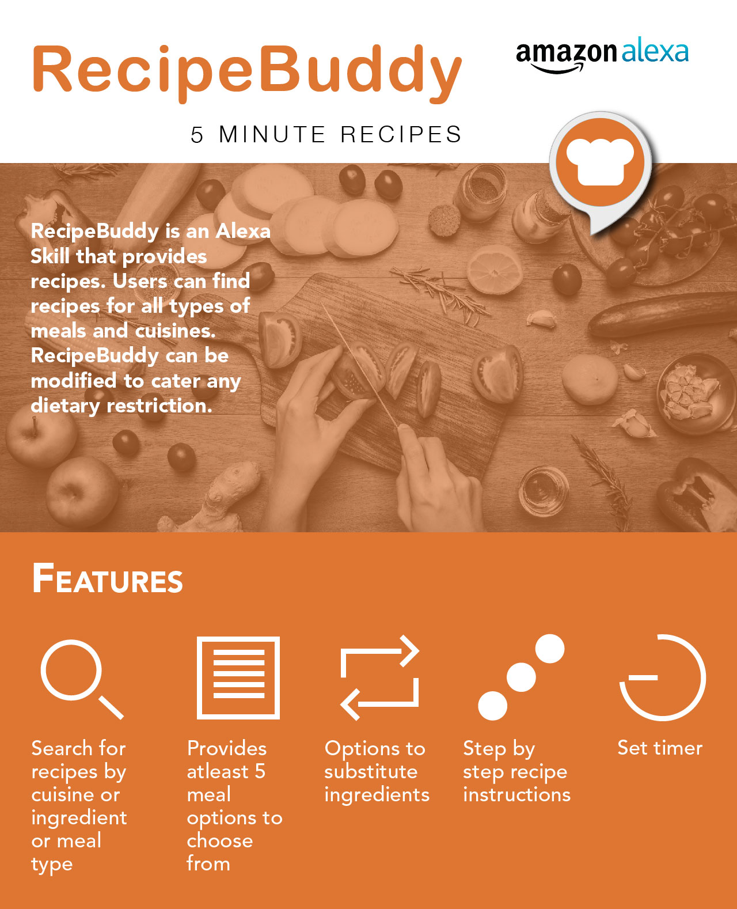
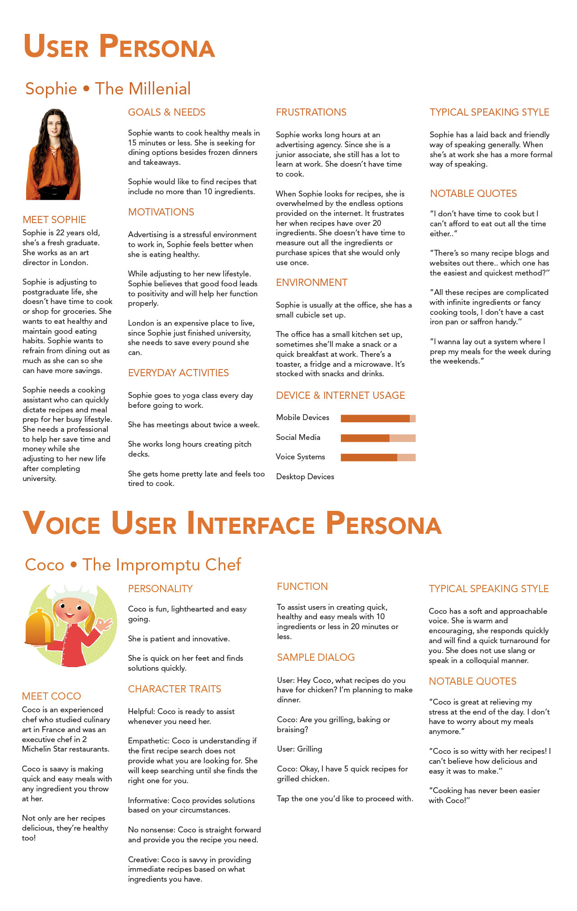
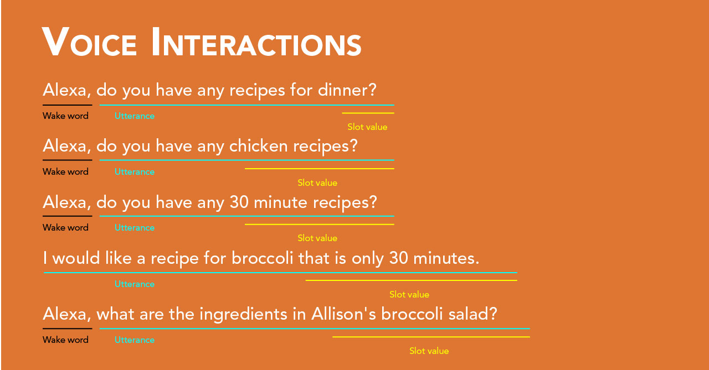
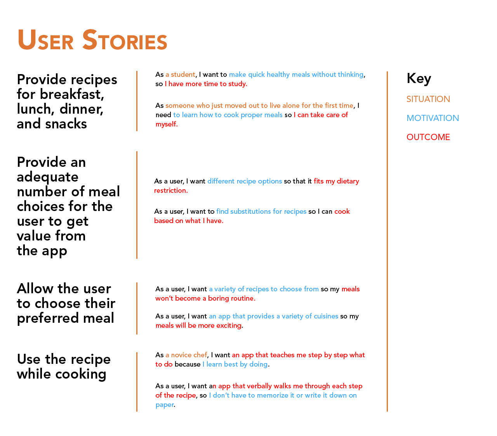
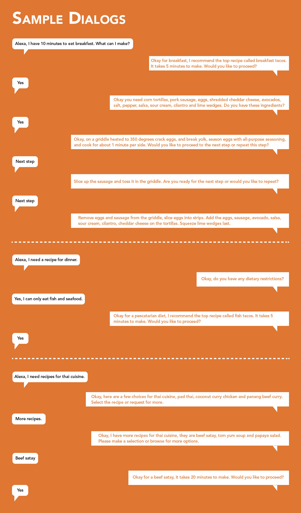
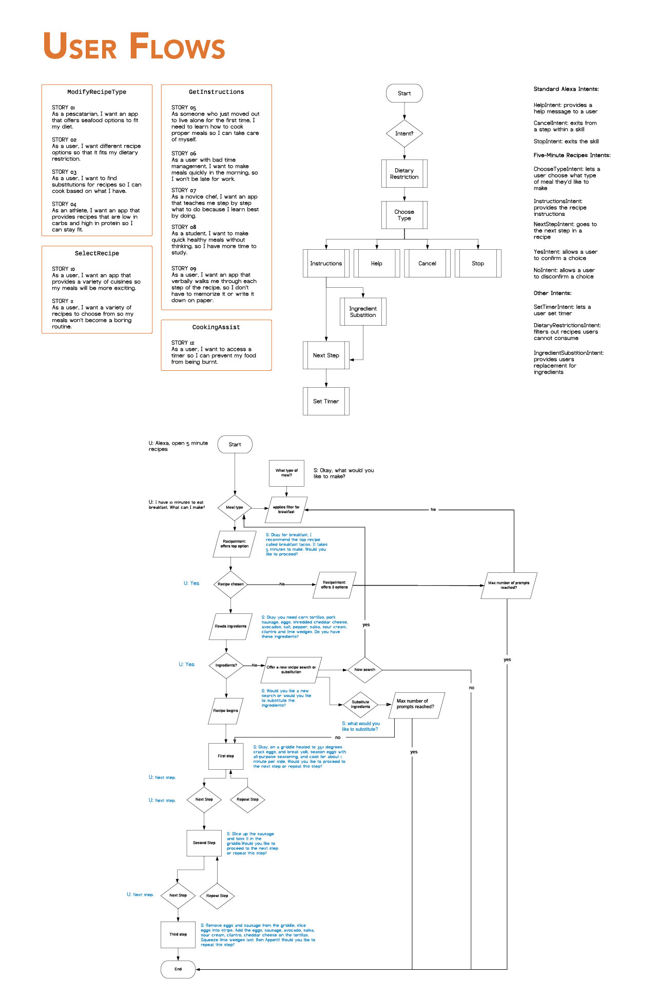
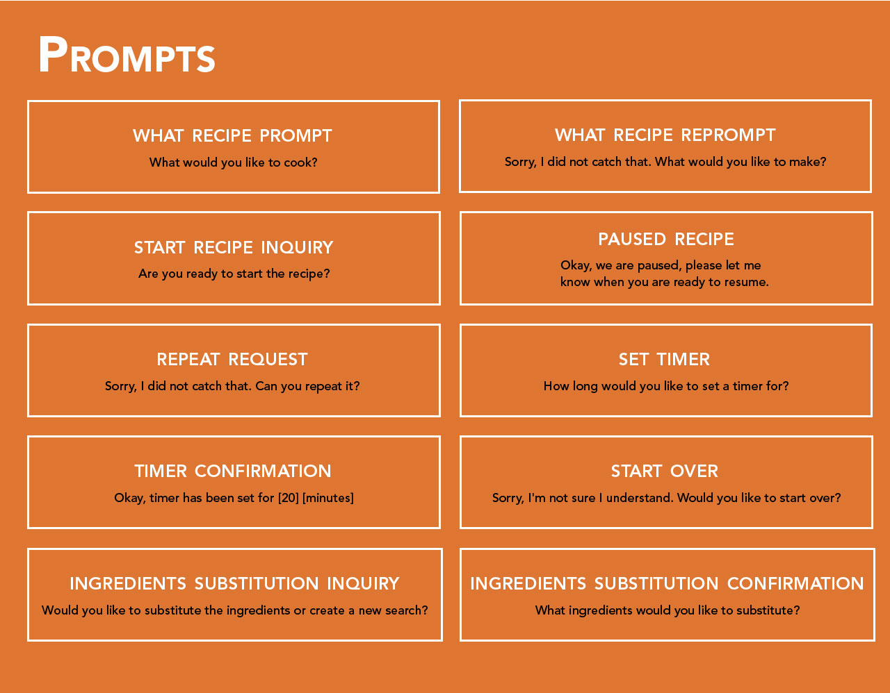
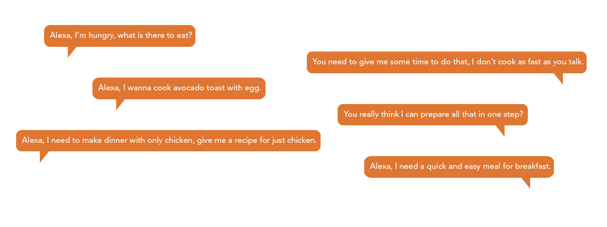
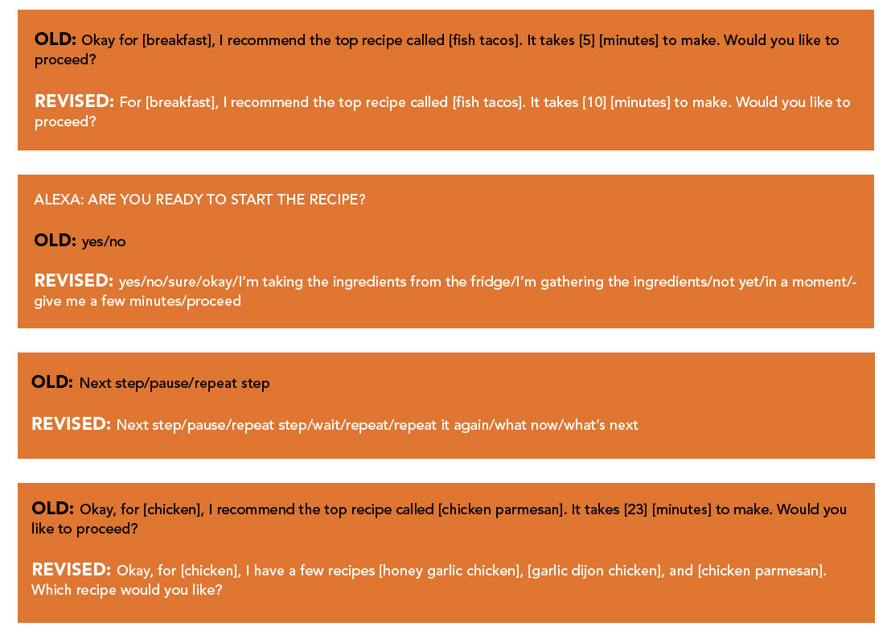

voice user interface design and user research
A voice assistant that provides cooking assistance is needed in kitchens of today’s society. Books and digital devices are not helpful as cooking requires the use of both hands. The chef is not always able to turn the page or scroll on a screen for further instruction. Cooking videos and cooking shows are not helpful either. The culinary host may be moving too quickly for the viewer to keep up with or the viewer’s eyes need to be focused on their immediate task. Voice user interfaces are a great solution for this problem as they can dictate out loud the recipe directions at a steady pace while the cook can focus on their culinary task.
Personas were created to direct the design decisions in the development of RecipeBuddy. The user persona is a representation of the pain points and needs of the target user. During the design process, the user persona is used as a point of reference to stay on target. The system persona is designed to match the user persona’s preferences and speech patterns. The system persona is a representation of the assistant the end user will interact with. By establishing a system persona, it anthropomorphizes the voice interface. Both personas were vital in the beginning to order to establish voice scripts and prompts. They were used as references during the design process to ensure proper design choices were made for a smooth interaction with the voice assistant.
 User stories were created to help design the features needed in the voice assistant. The story sets the context, identifies what the user’s needs are and what their goal is. They represent the situations the user is in and summarizes what an experience needs to cover.
 User flows are created to establish the structure of the voice interface. It maps out all the possible inputs and identifies any issues or additional use cases. The user flow functions like a floor plan of a building, it identifies all the possible paths the user can take to reach their place.
Voice prompts and utterances were established to create the script for the voice interface. The voice script is essentially the heart and soul of the voice interface. It processes what the user will enter and responds with the appropriate prompt.
BACKGROUND
People needed a skill that provides healthy and quick recipes for their busy lifestyles. The resulting prototype is an initial hypothesis on how I hope to solve the problem. A usability test will be run to test the most important features and functionality: selecting a recipe, providing a variety of recipes and receiving step by step instructions. The study will include a briefing, task performances and follow up questions. The test will be conducted with WOz methodology and VoiceX. It will be recorded with QuickTime player. The participants range between the ages of 25 - 29. They are working professionals with high technology usage. They are familiar with voice interfaces.
TEST OBJECTIVES
• To understand how users respond to the skill prompts
• To further dissect all possible speech dictations a user will say to the skill
• To study if there are any issues in searching for a recipe
• To study if there are any issues in selecting a recipe
• To study if there are any issues receiving cooking instructions
• To understand if there are any flaws or issues with the voice system overall
ISSUE 1: Recipe time length (medium)
Suggested Change: Use realistic cooking time and include prep time for an overall total of how long it really takes to make the dish.
Evidence: Users thought it was unrealistic to make fish tacos in 5 minutes. They suggested to include prep time and not just cooking time.
ISSUE 2: Utterances to enter recipe (high)
Suggested Change: Include more utterances to enter start recipe prompt.
Evidence: User responded to the start recipe prompt with “ I’m taking the ingredients from my fridge.” The skill is designed to respond to yes or no to starting a recipe. More utterances need to be considered.
ISSUE 3: Include more utterances (medium)
Suggested Change: Include what now as an utterance Evidence: In order to proceed along the recipe steps, the skill is designed to only respond to next step, pause or repeat step. However user responded by saying, “What now?”
ISSUE 4: Break down recipe steps further and slow down the pacing of instructions (high)
Suggested Change: Recipe skill needs to allot time for user to follow instructions or break down recipe steps further so users do not feel rushed.
Evidence: User felt the steps were demanding and there was a time crunch to keep up with cooking. They needed more time to recollect what the instructions were to follow through.
ISSUE 5: Offer multiple recipes in the beginning of the search (high)
Suggested Change: Include 3 recipe options at the beginning instead of 1.
Evidence: User did not have parmesan cheese and did not like the option. The app only offered one option which gave the user the impression that was the only recipe available for chicken.
OUTCOME
The testing went very smoothly. I was able to highlight the strengths and weaknesses of the skill to further improve it. A few changes that need to be made include: multiple recipe options during the immediate search, change the recipe time to be more realistic and slowing down the pace of the recipe by breaking down the steps more and including more utterances. From the usability testing, I was able to discover more utterances users could possibly say to the prompts from Alexa. The users felt rushed and slightly overwhelmed by the amount of information given through the instructions.
